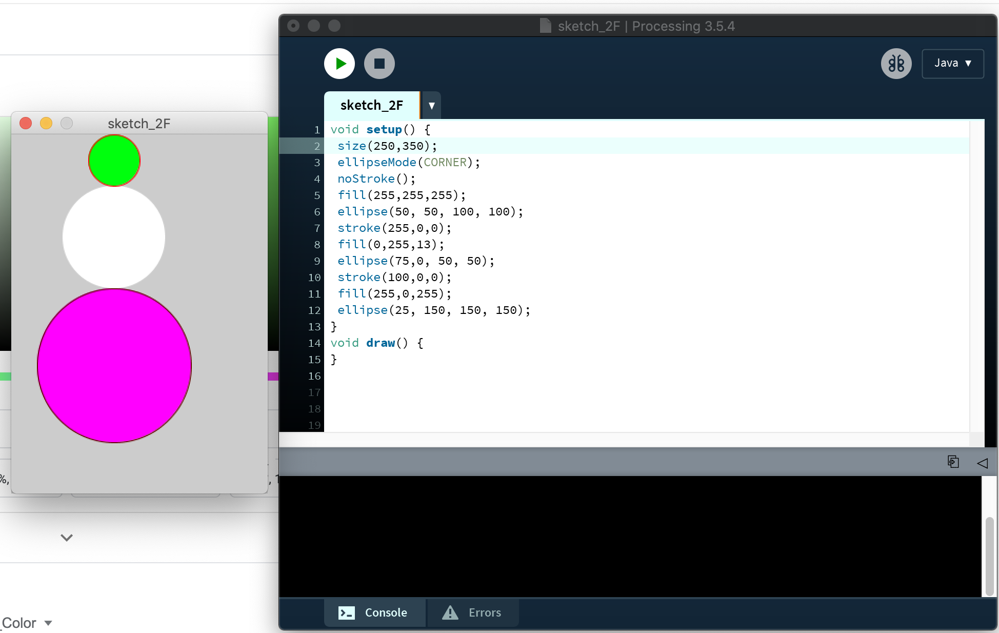
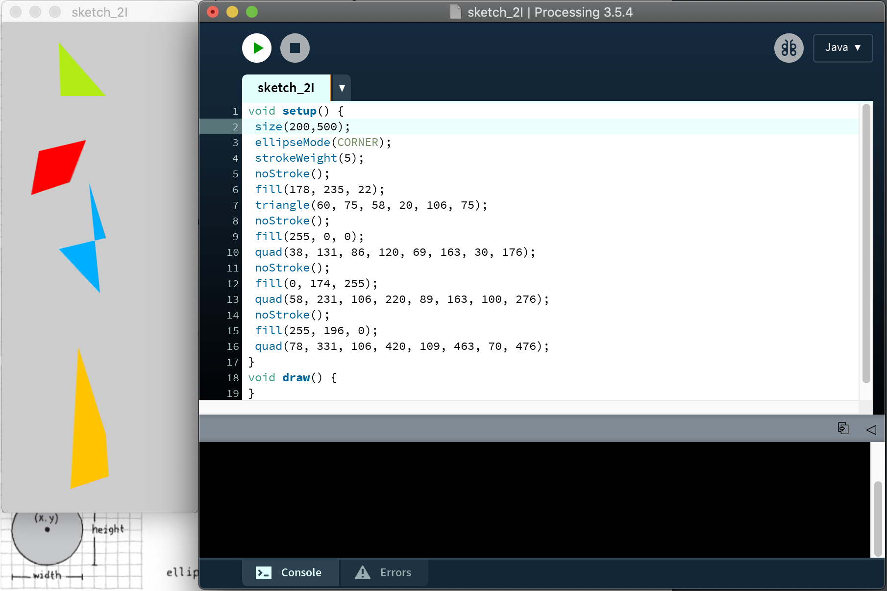
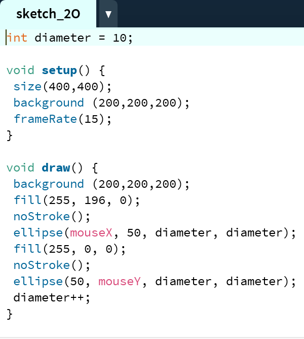
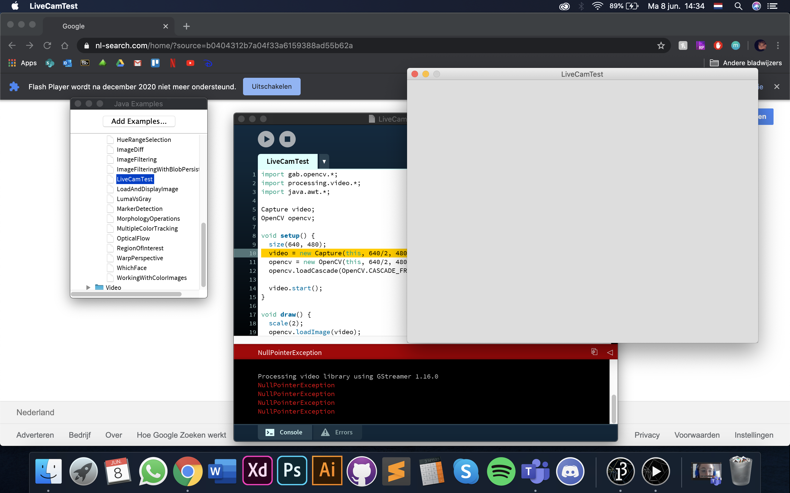
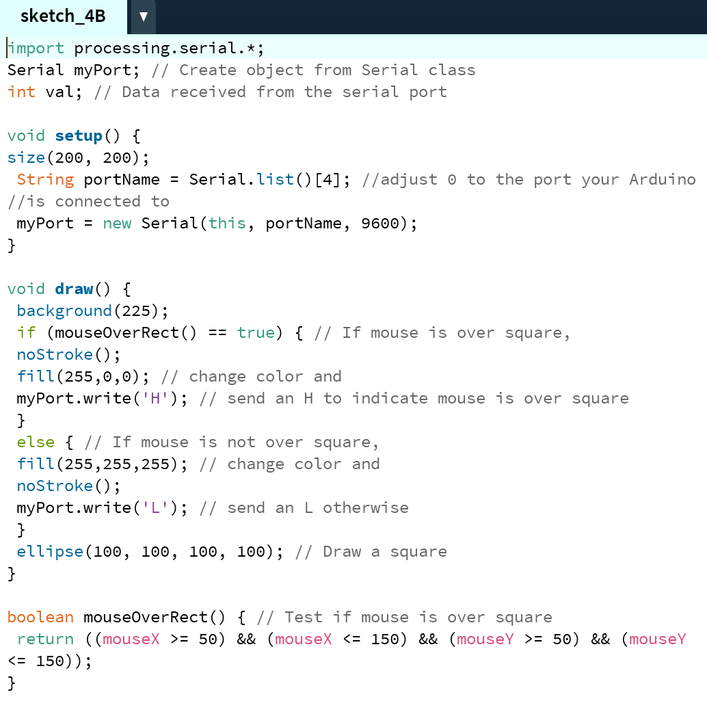
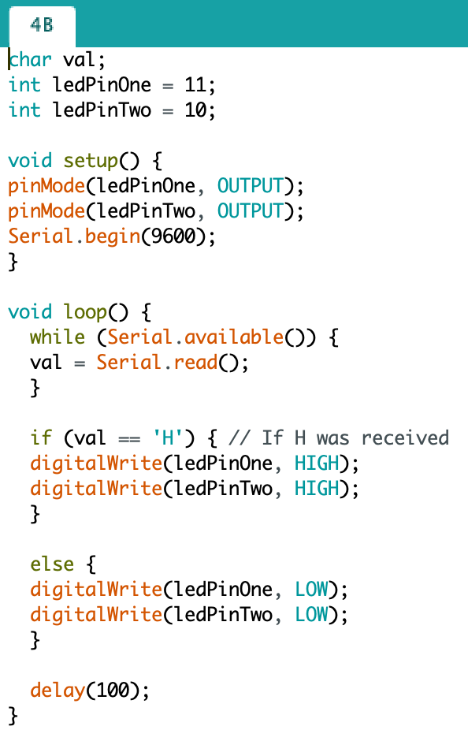

Computer vision
De volgende opdrachten uit de Computer Vision workshop worden hierop uitgelicht: 2F, 2I, 2O en 4B. 3B en 3D heb ik niet gemaakt, omdat dit niet mogelijk was met mijn Macbook. Na overleg met mijn docent, Tim van den Bosch hadden we besloten dat ik deze opdrachten kon overslaan zolang ik bewijs uploadde dat het niet mogelijk was. Daarom staat de opdracht hier wel tussen, maar heeft het geen andere content naast de foto van de fout.
Opdracht 2F
Voor opdracht F werd gevraagd om 3 (of meer) ellipses te maken die op verschillende plekken stonden, verschillende kleuren hadden, verschillende breedtes en hoogtes hadden en wel of geen border hadden. Je was hierin vrij om te doen wat jij zelf wilde maken. Ik koos ervoor om een kleurrijke sneeuwpop (zonder gezicht) te maken.
Opdracht 2I
Voor deze opdracht moest ik 4 verschillende vormen maken die vier verschillende kleuren en locaties hadden in Processing. Ik heb de vormen onder elkaar neergezet.
Opdracht 2-O
Bij opdracht 2-O werd van mij gevraagd om twee verschillende vormen interactief te laten werken op het moment dat je de muis bewoog. Ik besloot om twee cirkels (ellipsen) te bewegen waarbij de 1 op de x-as bewoog en de ander op de y-as. In de video hieronder staat een demonstratie.
Opdracht 3B & 3D
De camera werkte niet en nadat ik het Word Document dat op BlackBoard was geupload had uitgevoerd werkte het nog steeds niet. Ik had daarna nog de code veranderd in: video = new Capture(this, 640/2, 480/2, "FaceTime HD Camera (Built-in)");, maar dit werkte ook niet. Na overleg met de docent had hij toestemming gegeven om deze opdrachten over te slaan en naar opdracht 4 verder te gaan.
Opdracht 4B
Bij opdracht 4B werd gevraagd om Arduino te linken met het programma Processing. Voor deze opdracht koos ik ervoor om twee LED lampjes aan te laten gaan doordat de gebruiker in Processing over een cirkel gaat.
 